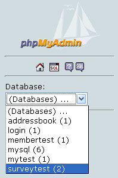
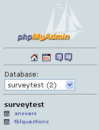
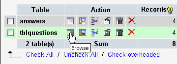
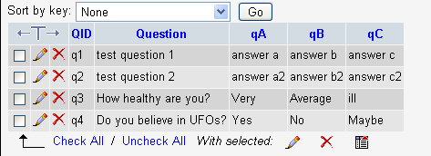
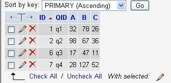

Create a database for a Survey App
This lesson is part of an ongoing Survey/Poll tutorial. The first part is here: Build your own Survey/Poll, along with all the files you need.
In the previous part of this lesson, you opened the phpMyAdmin screen. With this still open, click on "Please select a database". Have a look at the items on the drop down list. You should see one called surveytest:

If you can't see surveytest there, it means you haven't copied the surveytest folder to the correct place.
If you can see surveytest, select it from the drop down list. You should see the names of two tables appear:

Click on tblQuestions, and you'll see the Structure for this Table (it's too big to fit on this page, so click below to see it):
The Structure for the tblQuestions Table (opens in a new window - 59K
Under the Table heading, you'll see the two tables in this database: answers and tblQuestions. Click on the Browse icon for tblQuestions, as in the image below:

You will be taken to the Field names and Rows in the table:

The Field names run from left to right, and are important. They are:
QID
Question
qA
qB
qC
The tblQuestions table above has four rows of data, one for each question. The QID field is the one to pay attention to. The values in the sample table are q1, q2, q3, and q4. This QID field is the Primary Key in this table. This means that the data in this field has to be unique. You can then use this QID field to identify each row in the table. This same field, QID, is also in the answers table, along with the qA, qB, qC fields. This allows you to select all the records in both tables based on the QID field. You just pull all the records that match. For example, you can say "Select all the records in both tables where the QID field equals q1".
Take a look at the answers table by clicking the link on the left hand side. Then click on Browse at the top. You should see this:

In the answers table, the unique field (the primary key) is the ID field. This is just an auto incrementing number that you used in an earlier section. You don't have to worry about this field. But notice that the QID field is also there, along with the same values from the tblQuestions table: q1, q2, q3, and q4. This matching QID field in the answers table is something called a foreign key, in database terminology. Joining data from a primary key in one table to a foreign key in another is common technique in database creation. You do this when you want to keep data separate, and to avoid having too many fields in a single table. It also speeds things up. In our example database, we can keep the questions and answers separate.
(NOTE: If you have some knowledge about databases, you'll know about Referential Integrity. Unfortunately, phpMyAdmin doesn't enforce this. So if you delete a row from one table, the corresponding row in another table won't get deleted - you have to code for that yourself!)
The A, B, and C fields in the answers table record how many people voted for each option of your question. So, for question four (q4) 28 people voted for option A, 127 people voted for option B, and 52 people voted for option C. If you look at the matching row (q4) in the tblQuestions table you'll see that the question was: Do you believe in UFOs? (These answers were entered by us - it's not real data!)
Now that you have a good idea about how the database works, let's go through the code that sets a question.